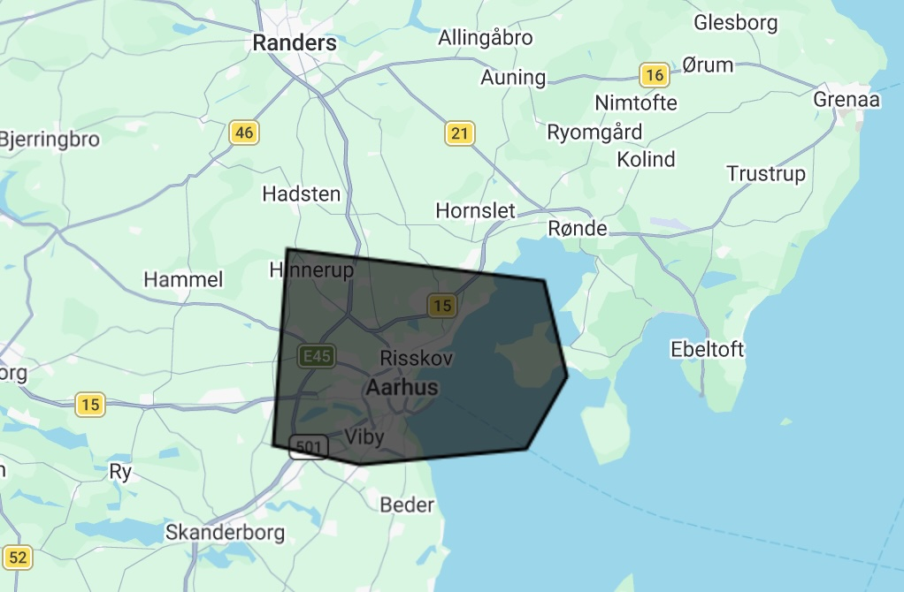

Land Use Change over 2020
Find below a timelapse demonstration of Land Use Change I did with GenAI
Context
Earth Observation technology has grown rapidly within the last decade. More data is becoming open-source and, together with GenAI developments, tools developed to understand Land Change are being created at higher-than-ever volumes. World Land Use classification datasets are available to the public. That type of data is vital to understand what we are doing with Earth, at what pace, and what could be the consequences of it.
On maps
A map does not just chart, it unlocks and formulates meaning; it forms bridges between here and there, between disparate ideas that we did not know were previously connected. - Reif Larsen, The Selected Works of T.S. Spivet
One day project
I retrieved monthly data from the World View dataset for the year 2020 at a Region of Interest centered in Aarhus, Denmark, and visualized it using a horizontal timelapse slider.
Data description and Limitations
Monthly mean multispectral data was retrieved from the Harmonized Sentinel-2 MSI: MultiSpectral Instrument, Level-2A (SR) dataset publicly available on Google's Earth Engine Data Catalogue. Data was restricted to the ROI shown below:
Timelapse slider for land use change
Find below a fast visualization of Land Use mapping throughout 2020 around Aarhus, Denmark. Black spots where areas where no World View data could be retrieved for that month. That can happen due to clouds, snow reflectance, among others.